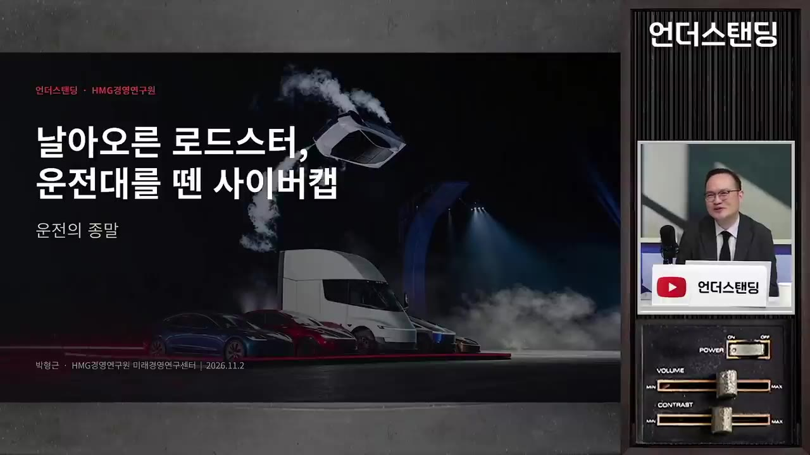
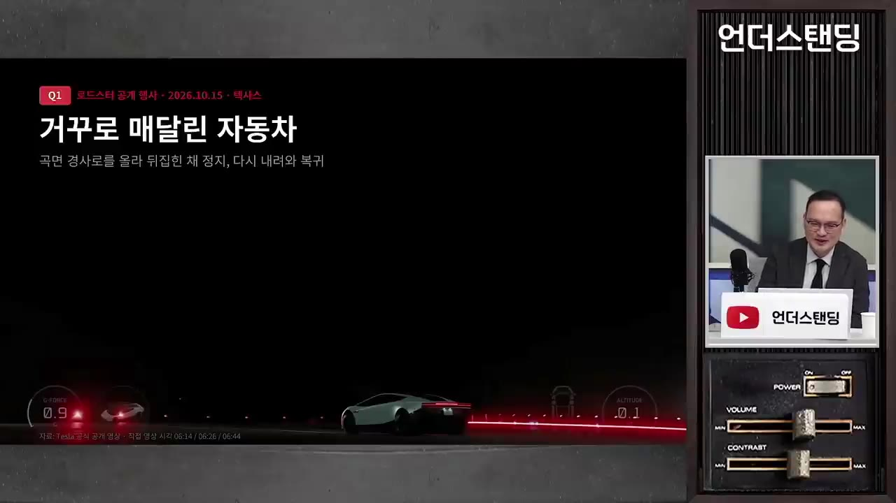
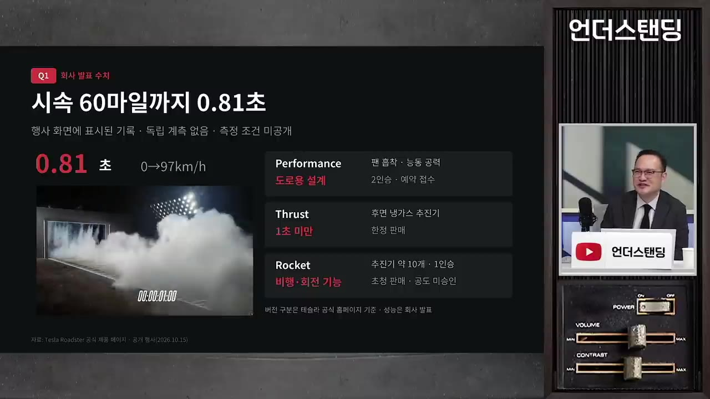
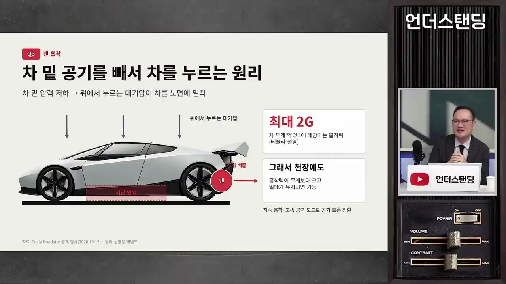
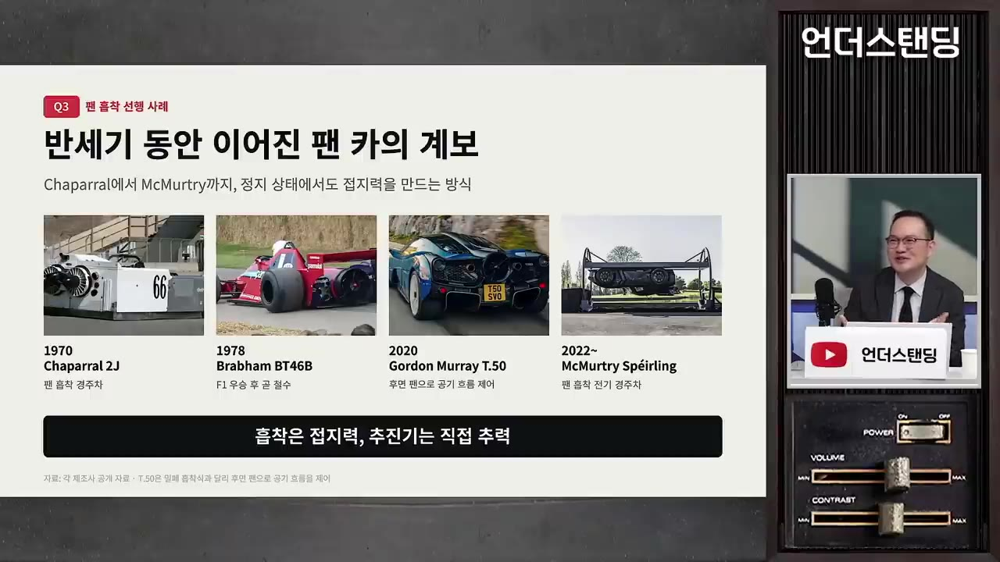
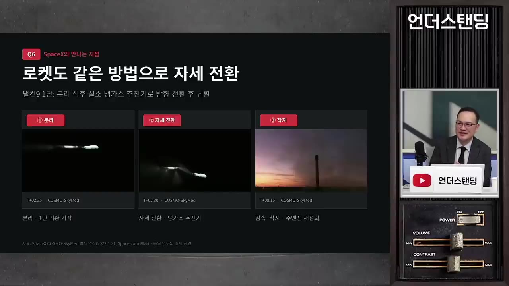
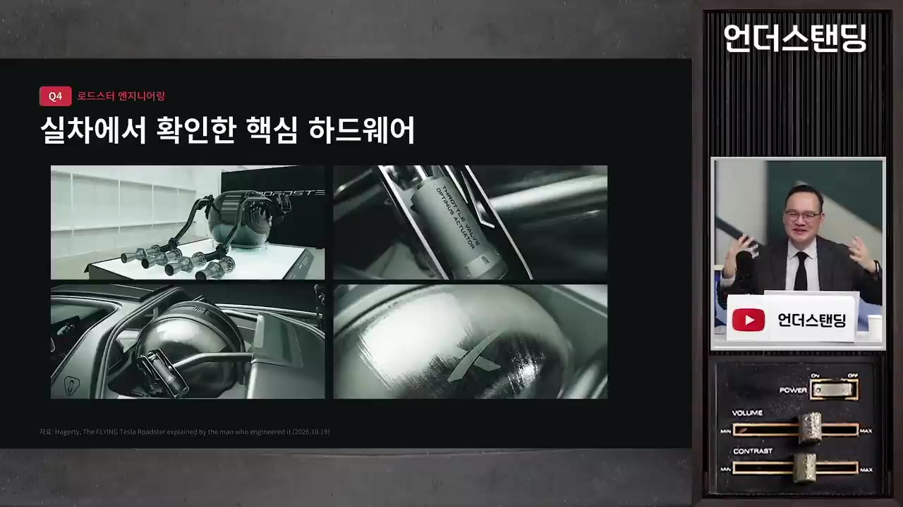
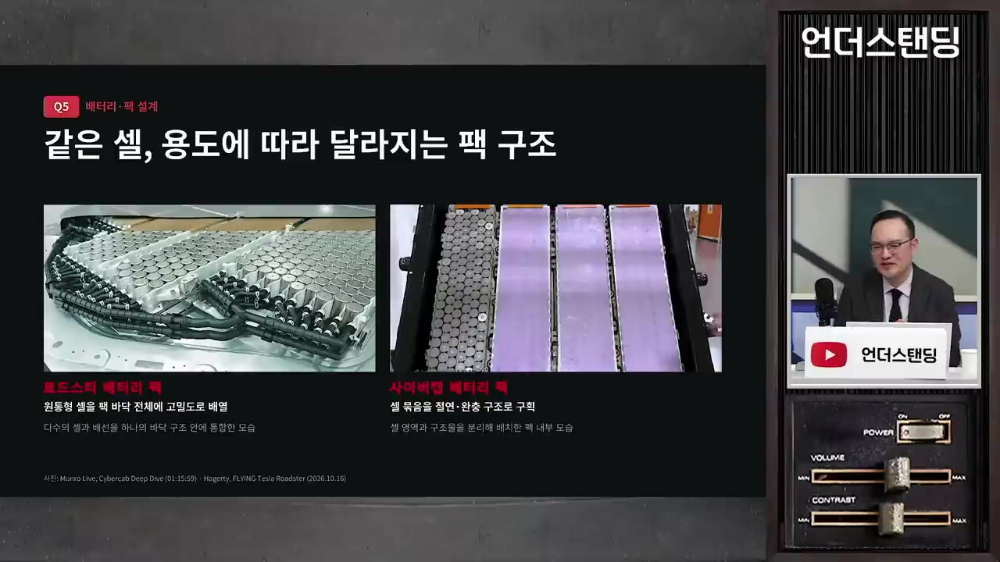

[박형근의 테슬라 1부] 하늘을 나는 신형 로드스터, 대체 어떤 로켓 기술 썼길래 (HMG경영연구원 박형근 실장)
▶ 원본 영상 보기한눈에 보기
- 2025년 10월 15일 테슬라가 신형 로드스터로 거꾸로 매달리기·공중 1회전 점프·제로백 0.81초를 수백 명 앞에서 실제로 시연했다.
- 박형근 실장은 이 이벤트를 "운전대 달린 차의 끝판왕을 보여준 뒤 운전의 종말을 알리는 신호"로 해석한다. 운전은 승마처럼 취미로 남는다는 것.
- 핵심 기술은 세 가지: 차 바닥에 스커트를 내리고 팬으로 공기를 빨아 4.6톤 흡착력을 만드는 장치, 650기압 질소를 노즐로 뿜는 냉가스 추진기(스페이스X 로켓 자세제어 기술), 날개와 밸브를 움직이는 옵티머스 로봇의 액추에이터.
- 가스 탱크는 2~6시간 충전해 단 5초 쓰는 과잉 설계이며, 공도에서는 쓸 수 없어 사유지·쇼용에 머물 가능성이 크다.
- 배터리도 알루미늄 셀 캔·티타늄 커버·양면 냉각 등 비싼 설계를 넣었고, 이런 과잉 기술이 고급차·로봇으로 내려올 수 있다는 평가다.
이런 분께 도움이 됩니다
- 로드스터 시연 영상을 보고 "저게 어떻게 가능하지"가 궁금한 분. 흡착·냉가스·액추에이터 원리를 비전공자 눈높이로 알 수 있다.
- 테슬라·스페이스X·옵티머스가 기술적으로 어떻게 엮이는지, 그리고 그것이 사업적으로 무슨 의미인지 보고 싶은 투자자·자동차 업계 종사자.
핵심 내용
이 이벤트의 의미: 운전하는 차의 끝판왕
- 박형근 실장(현대차그룹 HMG경영연구원 소속)의 개인 해석: 테슬라는 "더 이상 운전하는 차를 만들 의미가 있을까"라는 질문에 답하기 전에, 가장 빠르고 점프까지 하는 마지막 운전차를 보여줬다. 연구원 내부에서도 "혁신이냐 쇼냐" 토론이 붙었다고 한다. (1:30, 2:37)
- 비유: 말은 원래 이동수단이었지만 지금은 경마장·승마장에서 취미로 탄다. 자동차 운전도 그렇게 된다는 마지막 신호.
- 사이버캡 로보택시 확장이 빨라지고 있어 테슬라는 자율주행 완성에 다가왔다고 자신한다는 것이 배경.
- 진행자의 반론: 자율주행이 아직 완벽하지 않은데 왜 끝판왕 쇼를 먼저 하느냐, 자율주행에 자신 없어서 이걸로 마무리하려는 것 아니냐.
- 시연 차에는 사람이 아니라 우주복 입은 더미 '스타맨'이 탔고, 제어는 대부분 AI에 의존했을 것으로 본다.
- 사업적으로는 몇 천 대 팔릴 차(매출 1% 미만)인데도 티징 영상·AI 패러디 영상이 쏟아져 브랜드 마케팅 효과가 컸다는 평가. (6:13)
💡 "핸들 달린 차는 더 이상 생산하지 않겠다"는 선언과 같은 이정표라는 것이 박 실장의 결론.

시연에서 보여준 세 장면
- 원래 10월 1일 예정이던 행사를 15일로 미뤘다. 머스크가 "영상만 올리면 아무도 믿지 않을 것"이라며 사람들을 초청해 현장에서 보게 했기 때문. (7:38)
- 장면 1: 거꾸로 매달린 채 떨어지지 않는 차. 진행자가 가장 신기해한 장면이고, 박 실장은 "날아가는 것보다 붙어 있는 게 더 쉽다"고 설명한다.

- 장면 2: 킥플립. 점프해서 한 바퀴 돌며 차량 다섯 대를 뛰어넘었다. 스케이트보드 기술 이름이며, 회전은 쇼를 위해 일부러 넣은 것.
- 장면 3: 가속. 처음 발표 때 목표는 제로백 1.6초였는데 실측 0.81초가 나왔다. 너무 빨라 영상으로 보여주기 어려울 정도. (8:44)
| 구분 | 제로백 |
|---|---|
| 일반 차 | 9~10초 |
| 빠른 차 | 5초 |
| 고성능 전기차 | 약 3초 |
| 로드스터 발표 목표 | 1.6초 |
| 로드스터 시연 실측 | 0.81초 |

왜 바닥에 붙이고 가스를 뿜어야 했나
- 차의 속도 한계는 타이어 접지력에 있다. 드래그 레이스에서 처음 세게 밟으면 바퀴가 헛도는 것처럼, 회전력이 아무리 커도 마찰력이 못 버티면 추진이 안 된다. (9:14)
- 그래서 레이싱카는 뒤에 날개(에어포일)를 달아 다운포스(차를 아래로 누르는 힘)를 만든다.
- 로드스터 모터는 일반 150마력급 차의 6~7배 회전력으로, 흡착과 모터만으로도 시속 370km까지 가능하다고 한다. 하지만 1초 안에 제로백을 끊으려면 가스 분사 부스터가 필요했다. (19:39)
- 이벤트에서 머스크와 수석 엔지니어 라스 모라비의 대화: "몇 초 안에 제로백을 하면 되겠어요?" "1초는 돼야죠."
- 추진기를 달면 시속 500~600km, 마하 0.5 정도까지도 간다고 말한다.
💡 한계가 접지력에 있으니 "차를 바닥에 붙이는 힘"과 "타이어 밖의 추진력" 둘 다 더한 것.
바닥에 붙이는 기술: 스커트·팬 흡착과 가변 날개
- 스커트 내림
- 밀폐 공간 생성
- 팬으로 공기 배출
- 4.6톤 흡착
- 1스커트 내림
차 바닥 전후좌우로 치마 같은 스커트가 내려와 지면과 차 사이를 막는다 (11:14)
- 2밀폐 공간 생성
아스팔트라 완전 밀폐는 아니지만 차 하부가 닫힌 공간이 된다
- 3팬으로 공기 배출
후측방 팬이 밑의 공기를 뒤로 빨아낸다. 공기의 30%만 빼도 충분한 흡착력이 생긴다
- 44.6톤 흡착
정지 상태에서도 차 무게(1.7톤)의 두 배 가까운 힘으로 눌린다. 그래서 거꾸로도 안 떨어진다

'차 밑 공기를 빼서 차를 누르는 원리' 슬라이드, 최대 2G · ▶ 13:17
팬을 켜고 출발하면 바퀴가 헛돌지 않고 바로 붙어 나가므로 가속이 크게 좋아진다. 스커트는 이물질이 팬으로 들어가는 걸 막는 가드 역할도 한다. (18:39)
달릴 때는 공력이 맡는다. 도어 패널·측면 패널이 벌어지고(테슬라 단차처럼 보이지만 공력 날개) 꼬리 날개를 위로 세워 공기를 위로 흘리면서 차를 아래로 누른다. 시속 70~80km 이상부터 효과가 난다.
날개를 움직이는 액추에이터는 옵티머스 로봇의 허벅지 관절용 수직형(리니어) 액추에이터다. 피아노 한 대를 들 만큼 힘이 세서 고속 공기저항을 버틴다. (14:20)
흡착 주행은 새 발상이 아니다. 1978년 F1에 팬으로 흡착하는 차가 나와 코너링·가속 차이가 너무 커서 항의 끝에 바로 철수했다. 작년에는 맥머트리 스피어링(자막상 '맥모티 스펄링')이 롤케이지에 차를 붙여 뒤집어 보이는 시범을 했다.
💡 과학자들이 몰랐던 기술이 아니라 아무도 양산차에 담아 보여 주지 않았던 것.

냉가스 추진기: 로켓 자세제어 기술을 차에
- 원리는 풍선과 같다. 고압 용기에 질소(공기와 큰 차이 없음)를 650기압으로 압축해 두고 작은 노즐로 분출한다. 점화하지 않아서 '냉가스(콜드 가스)'라 부른다. 뿜을 때 하얀 연기가 보이는 것은 압력이 풀리며 순간 냉각으로 생긴 수증기다. (21:04)
- 수소차 넥쏘 탱크도 650~700기압이라 압력 자체는 새로운 수치가 아니다.
- 차 뒤에 노즐 구멍이 4개 있다. 007 영화의 가스 토출구를 현실로 만든 격.
- 펌프 충전
- 600L 저장
- 밸브 개방
- 5초 분사
- 1펌프 충전
펌프로 밀어 넣는 데 최소 2시간, 길면 6시간. 테슬라는 30분까지 줄이겠다고 한다 (22:09)
- 2600L 저장
탱크에 가스 약 600L가 들어간다. 운전석 바로 뒤 트렁크 자리에 실린다
- 3밸브 개방
600기압을 막고 있던 스로틀 밸브를 옵티머스 액추에이터가 연다
- 45초 분사
뒤·옆·아래 노즐로 뿜어 가속, 점프, 회전, 자세제어를 한다. 분사 가능 시간은 5초
- 5초면 다섯 대 넘는 점프를 여섯 번쯤 할 분량이지만, 몇 시간 충전해 5초 쓰는 "오버 엔지니어링 중의 오버 엔지니어링"이라고 평한다. (24:10)
- 충전해 두면 수개월에서 연 단위로 저장은 가능하다고 본다. 수소 탱크처럼 조금씩 새지만(선박으로 호주까지 보내면 2~3% 준다는 비유) 장기 보관이 가능하기 때문.
- 로켓에서의 역할: 상승 때는 메탄 연소로 추력을 얻고, 분리와 귀환 자세제어는 냉가스 추진기가 맡는다. 팰컨9 1단 분리도 냉가스로 한다. 123m 스타십이 궤도에서 돌아와 '젓가락'에 잡히는 자세제어 기술을 대기 조건이 다른 지상에 다시 맞춘 것.
- 착지 자세제어는 AI 모델링과 반복 학습으로 데이터를 쌓았을 것으로 본다. 시연 전 텐트 안 비밀 실험에서 부서지고 날아간 영상도 있다.
💡 부스터 하나로 우주를 37번 오간 기본기가 있어서 가능한 기술이라는 설명.

스페이스X·옵티머스 부품이 들어간 곳
- 가스 탱크는 스페이스X의 탄소 압력 용기(타입 4). 플라스틱 라이너로 통을 만들고 탄소섬유를 엄청나게 감아 600기압 넘는 내압을 견딘다. 우주의 저온·고온·고압·수명을 견딘 소재 기술이라 "단순한 고압 탱크"가 아니다. (29:43)

- 진행자 정리: 전자공학·기계공학이 아무리 날뛰어도 재료공학이 받쳐 주지 않으면 못 한다.
- 옵티머스의 수직형 액추에이터는 두 곳에 쓰였다. 리어 스포일러 날개 구동, 그리고 600기압 가스를 막는 스로틀 밸브. 0.0 몇 도만 틀어져도 차가 박살 나는 자세제어를 빠르고 정확하게 해야 한다. (31:20)
- 자세제어 알고리즘도 스페이스X 출신으로 본다. 종방향·수직 방향 회전, 뺑글뺑글 돌기도 가능할 것이라고 추정.
배터리 팩: 사이버캡 B, 로드스터 A-
- 수석 엔지니어 라스 모라비가 사이버캡 팩에 B, 로드스터 팩에 A- 평가를 줬다. 테슬라 핵심 인물로 디자인 수장 프란츠 폰 홀츠하우젠, 엔지니어링 수장 라스 모라비, AI 수장 아쇽 엘루스와미(인도계)를 알아두면 좋다. (33:53)
- 사이버캡 팩도 모델 Y·S보다 크게 발전했다. 예전 팩은 밀폐·보온·충돌 안전용 왁스·에폭시·스펀지가 덕지덕지 붙어 수리가 어려웠는데, 깔끔해져서 고장 모듈만 빼서 끼울 수 있다. (35:20)
- 셀마다 연결하던 BMS(배터리 관리장치) 와이어링이 무선으로 바뀌었다. 전압선만으로 센싱해 중앙에 무선 통신. GM도 하겠다던 차세대 기술이 실제 들어간 것을 확인.
- 배터리 성능이 초기 설계보다 좋아 공간이 남아 4열 모듈 사이와 측면에 완충 공간을 뒀다. 찌그러짐이 화재로 이어지므로 안전에 유리하고, 나중에 LFP(인산철) 배터리도 넣을 수 있는 여유다.
- 로드스터 팩은 돈을 더 써서 성능을 끌어올렸다.

| 항목 | 사이버캡 | 로드스터 |
|---|---|---|
| 4680 셀 캔 소재 | 철(싸지만 열전도 낮음) | 알루미늄(열전도 약 2배) |
| 상판 커버 | 철강 | 티타늄(알루미늄은 잘 찌그러져서) |
| 냉각 핀 | 셀 2개 묶음 한쪽만 | 셀마다 양쪽(스네이크 쿨링) |
| 냉각수 흐름 | 위에서 아래로 | 앞에서 뒤로, 면적을 전부 사용 |
| 설계 목표 | 경제성·수명, 시내 시속 60km 주행 | 고출력·빠른 방열 |
- 진행자 지적: 새 기술이 아니라 돈을 많이 쓴 것 아니냐. 박 실장도 인정하면서, 물량이 늘면 퍼포먼스 모델 등 고급 사양에 적용될 수 있다고 답한다. (40:22)
과잉 기술이 내려오는 길
- F1이 "돈지랄" 쇼지만 거기서 시험한 기술이 일반차로 내려오듯, 로드스터의 흡착·냉각 기술도 일반 차량과 로봇으로 흘러갈 수 있다. (43:25)
- 로봇의 현재 고민은 배터리 수명·빠른 방전·출력 부족(들어올리는 가반 하중). 고출력·고방열 셀 설계가 바로 쓰일 영역.
- 기술 확산의 하이프 사이클: 초기 과잉 투자·과잉 기술로 미래를 보여 준 뒤 경제성 있는 기술로 수렴한다. 다른 업체들도 여기서 배워갈 것.
- 머스크 유니버스: 스페이스X가 통신으로 데이터를 올리고 우주에서 학습해 지상의 로봇·자동차로 내리는 하나의 생태계가 되므로, 자본시장에서는 나뉘어 있어도 궁극적으로 한 몸체로 갈 것이라는 전망(투자 예측은 어렵다고 전제). 진행자는 "결국 합병하자는 메시지"라고 농담. (51:33)
💡 과잉 기술이 혁신을 일으킨다는 것이 박 실장의 한 줄 결론.
판매 옵션과 규제·안전
- 2028년 인도 예정이지만 로드스터 발표 후 이미 9년이 지났다. 예약금 3억 5천만 원, 차값은 10억 원 추정. 세 가지 옵션이 있다. (5:45, 55:21)
- 추진기 없는 기본형: 예약금 약 7천만 원. 압력 탱크 없이 흡착·공력만으로 시속 350~360km. 공중제비는 못 한다.
- 추진기 장착형: 이번 시연 차량. 세트 메뉴의 중간 가격처럼 메인이 될 것으로 본다.
- '로켓' 옵션: 추진기 4개를 더 붙여 추진력 두 배. 가격·예약금은 아직 미공개(최근 구매 가능해졌다는 언급은 있음).
- 공도에서는 쓸 수 없다. 1.7톤을 들어 올리는 분사력이라 옆 사람·차가 날아간다. 사유지, 항공 신고가 가능한 기관, 몬스터트럭 같은 쇼 공간에서만 가능하다고 본다. (25:04)
- 규제 승인이 되더라도 일반 도로에서는 추진기가 작동하지 않게 시스템으로 막는 기능 제한이 붙을 것. 사유지에서 푸는 별도 규제, 아랍 국가처럼 허용하는 나라가 필요할 수도.
- 진행자 반론: 남들 앞에서 보여주는 '하차감'이 핵심인데 사유지에서만 쓰라면 누가 사겠나.
자율주행 사고 회피에 쓸 수 있나 (토론)
- 진행자 제안: 가스를 채워 두면 다리가 무너지는 재난이나 충돌 직전에 에어백처럼 점프해 피할 수 있지 않나. 급정거보다 날아가는 것이 공학적으로 더 안전할 수도 있다. 5초면 30대쯤 뛰어넘는다. (26:39, 56:56)
- 박 실장 답변: 자율주행 사고는 대부분 충돌 위험을 아예 감지하지 못해서 생기는 판단 오류다. 추진기를 전개하기도 전에 사고가 나므로 실효성은 낮다고 본다. (57:56)
- 윤리 설계 관점에서는 피해가 더 적다고 판단해 그냥 충돌하는 설계도 할 수 있다.
- 다만 옆 차선으로 0.몇 초에 밀어내는 정도의 저렴한 회피 기능은 가능할 수 있다며 "자동차 그룹에서 고려해 보겠다"고 웃으며 답한다.
기억할 숫자·인용
- 제로백 0.81초(목표 1.6초), 모터만으로 시속 370km, 추진기로 500~600km(마하 0.5).
- 흡착력 4.6톤 vs 차 무게 1.7톤. 공기 30%만 빼도 충분.
- 가스 탱크 650기압·600L, 충전 2~6시간(목표 30분), 사용 5초, 저장 수개월~연 단위.
- 예약금 3억 5천만 원(추진기형), 약 7천만 원(기본형), 차값 10억 원 추정, 인도 2028년.
- 시연일 2025년 10월 15일(원래 10월 1일), 2025년 10월 기준 로드스터 발표 후 9년.
- 알루미늄 열전도는 철의 약 2배. 팰컨 부스터 재사용 37회. 스타십 높이 123m.
- "운전은 재미삼아 취미로 해라는 마지막 시그널." "과잉 기술이 혁신을 일으킨다." "결국 테슬라와 스페이스X는 같은 회사라는 걸 보여주고 싶었던 것."
생각해볼 점
- 영상 속 '운전의 종말' 해석은 박 실장 개인 의견이고, 진행자도 "자율주행 자신 없어 쇼로 마무리하는 것 아니냐"고 반론했다. 테슬라의 공식 메시지가 아니라는 점을 구분해야 한다.
- 로드스터 기술이 일반차·로봇으로 내려온다는 주장은 F1 사례의 유추다. 흡착 팬·냉가스 추진기는 공도 규제와 비용 문제로 실제 확산 경로가 불분명하다.
- 배터리 비교의 "A-, B" 평가는 테슬라 내부 인물의 자평이며, 영상 중간에 좌우 이름표가 바뀌어 설명되는 구간이 있어 세부는 다른 자료로 확인하는 것이 좋다.
바로 해볼 일
- 테슬라 로드스터 공개 행사 영상에서 거꾸로 매달린 장면의 스커트가 내려오는 순간을 직접 확인한다.
- 스페이스X 팰컨9 1단 분리·귀환 영상에서 냉가스 추진기가 뿜는 하얀 분사를 로드스터 분사와 비교해 본다.
- 영상에서 언급한 테슬라 핵심 인물 셋(홀츠하우젠·모라비·엘루스와미)의 역할을 메모해 둔다.